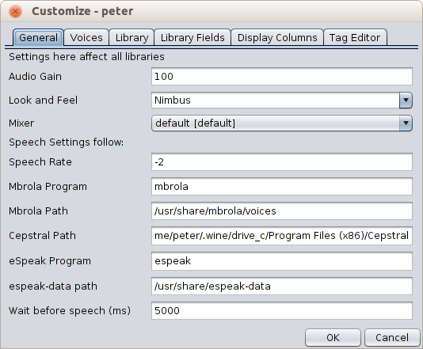
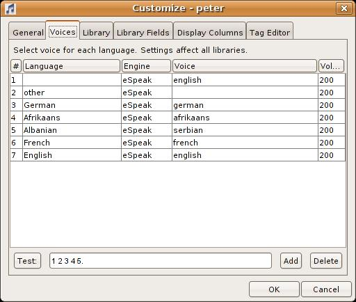
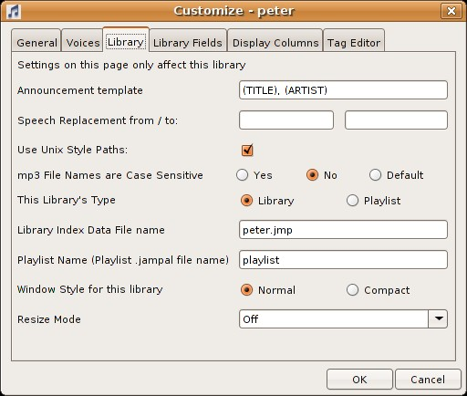
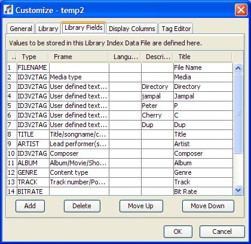
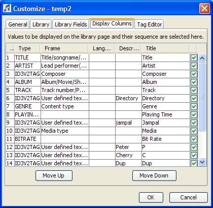
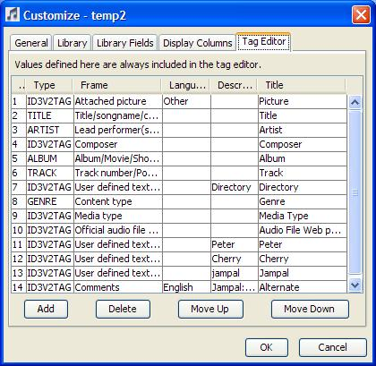

The easiest customization is done by creating your library from one of the predefined templates. By using the "New Library" menu you can select a template for the library type you want.
You can create extra playlists just be using Library Open, specifying a new file name and selecting Basic Playlist as the template. Playlists can be customized the same way that libraries can be.
Further customization of your library and of the system can be done from the "Edit", "Customize" menu.
General Tab

Audio Gain
This is a percentage value that is applied to the default java
sound level. If you find that the sound level is too low or too
high adjust this. To check the level, play a song with your system
default player (e.g. Windows media player) and play the same song
with Jampal. In the system media player set the volume to maximum
and adjust to a good listening volume with the master volume
control of your system. If jampal plays at a lower volume use a
higher value in Audio Gain, and if it plays louder use a lower
Audio Gain. Valid values are 1 to 2500.
Look and Feel
This is a list box that selects how the program windows display on
your system. The list box contains the names of the standard
options that come with java, and some third party looks form
various sources. See License &
acknowledgements. The standard Java looks are at the top of the
list. The selection will vary depending on your hardware, software
and the version of Java. The "Napkin" look is intended to look like
it was scribbled on a napkin and to get this effect it is best to
reset the font selection. If you have selected a font, select
"Edit", "Reset Font" to see the scribbled font that comes with
"Napkin".
You can download you own Java Look from the internet. If you do this, install the jar file for the look-and-feel in your java jre/lib/ext directory, and type the name of the class into the "look-and-feel" listbox.
Please be aware that in many cases downloaded or non standard looks may be CPU intensive or may cause problems. In some cases they may cause skipping during playback. If this happens or the system behaves erratically try switching back to a standard Java look. Please let me know if this happens or you have any problems.
Mixer Name
You can select which mixer java uses for playing songs. Normally
"Java Sound Audio Engine" provides the best quality. If this
setting does not work or provides poor quality, you can select a
different option from among the available mixers.
Speech Rate
Specifies how fast the announcer speaks. 0 is the default, to speak
slower use a negative number from -1 to -10. To speak faster use a
positive number from 1 to 10.
Mbrola Program
If you wish to use mbrola voices with eSpeak, enter here the name
of the mbrola program (normally mbrola). If it is not on the path
the full program file path must be included. The mbrola program
is needed. The programs supplied with "mbrola tools for
windows" do not work.
If you use mbrola voices with FreeTTS, the mbrola program must be at the Mbrola Path (next field) and must have a program name of mbrola.
Mbrola Path
If you wish to use mbrola voices with FreeTTS or eSpeak, enter here
the path where mbrola is installed. Voices must be installed in
subdirectories of that path. Mbrola and voices can be downloaded
free of charge from the MBROLA Project
To use mbrola with FreeTTS you must also copy the mbrola.jar file
as described on the FreeTTS Web Site.
Cepstral Path
If you use Cepstral as a speech engine for any languages, you must
enter the path where it is installed.
If you have purchased the Windows version of Cepstral and have decided
to switch to Linux but do not want to pay for Cepstral again you can
install wine and install Cepstral under wine. Then
type wine: in front of the path, and jampal will invoke it with wine. For example type this:
wine:/home/yourname/.wine/drive_c/Program Files (x86)/Cepstral
If you find that the announcement works on only the first song, make sure that you have not seleced Continuous Plyaing in the Play menu and specify a "Wait Before Speech" value of 5000.
The preferred way to use Cepstral is to purchase a Linux version.
ESpeak Program
If you use ESpeak as a speech engine for any languages, you must
enter the program name. If it is not on the path the full program
file path must be included.
espeak-data Path
If you use ESpeak as a speech engine for any languages, you must
enter the location of the espeak-data directory.
Wait Before Speech
Specifying a value here will cause the program to pause the specified
number of milliseconds before generating speech. When using Cepstral
for Windows with wine it may be necessary to specify a value of
around 5000 here, otherwise only the first song may be announced.
Voices Tab

Language
Here you can select voices for announcements in each language in
which a song may be sung. The voice is selected based on the
"Languages" tag of the song. More than one langauage can be
selected for a song. The last language in the list is used for the
announcement. You can also select a voice for songs with no
language selected (select blank) and a voice for songs with other
languages (select "other").
Speech Engine
Here you can select from Microsoft, FreeTTS, Cepstral, eSpeak, or
none. This specifies which speech engine will be used for song
announcements.
ESpeak This is a free speech system which can be downloaded from sourceforge. It supports a large number of languages and many voices, including mbrola voices. It runs on Microsoft Windows, Linux and other environments. Some Linux systems install it automatically.
Microsoft This only works on Microsoft Windows systems with Microsoft TTS installed. Windows XP and above has this pre-installed. You can adjust the voice and speeed in the Windows Control Panel. You can purchase or download voices that support Microsoft speech systems. Normally one or two voices come built in with Microsoft systems. Microsoft speech engine will currently not work with 64bit java. It will work with 64bit windows running 32bit Java.
Cepstral This is a commercial speech synthesis system available for many platforms and many languages. You can download a trial voice and purchase a license from Cepstral. This works on Windows, Linux and Macintosh. The voices are high quality than the other speech engines. Please test the trial version to make sure it works to your satisfaction before purchasing any voices.
Voice
Depending on which speech engine you selected, this displays a list
of available voices. If you want to select a default voice, select
blank. If the engine you selected is eSpeak and the voice you
selected is blank, a voice will automatically be selected based on
the language. eSpeak voices that start mb- are mbrola voices. These
only display here if you have installed them and given the correct
value for the mbrola directory.
Speech Volume
Specifies the volume as a percentage of normal (i.e. 100 is
normal). With some engines you can go above 100% but if you go too
high the sound will be distorted. With others any value above 100
is treated the same as 100. Mbrola voices are rather faint so you
may need to specify 500 or 1000 to get a good volume. Mbrola voices
with eSpeak will support values here up to the java maximum (2500
or 1000 depending on the mixer selected). Non-mbrola eSpeak voices
are rather loud. Non-mbrola eSpeak voices will not support any
value above 200.
Test
You can test the currently selected row. It will read the text from
the input area next to the test button. If the selected row has
language "other" it will assume no language.
Library Tab

Settings for the current library are changed here.
Announcement Template
This provides a template for the song announcements. This defaults
to "(TITLE). (ARTIST)", but can be changed to include any values
that are present in the tag. You can type words to be spoken but if
you have more than one song language do not include any words here.
They will be pronounced incorrectly in other languages. Anything
specified within parentheses () must be the name of a field or
frame. The same abbreviations are used as are used for TagUpdate. For ID3V2TAG frames use a space and
the frame identifier, for example (ID3V2TAG COMMengMy Comment) to
announce the comments frame that is English with the description
"My Comment". Additionally any of the values specified below for
the type column of the "Library Fields" tab can be used, except
DUMMY.
Speech Replacement
You can further modify the announcement by specifying one or more
regular expressions with replacements. The first box can have one
or more regular expressions separated by slashes. The second box
has the same number of strings separated by slashes. In sequence,
each regular expression will be replaced by its substitute before
the song is announced.
Use Unix Style Paths
If this is checked, the library will store all file names
unix-style, with no drive letter and with forward slashes. If you
are running Windows, this only makes sense if all your music files
are on the same logical drive. As long as your startup shortcut has
the startup directory on that same drive this will work. Advantages
of using this are: (1) You can use a dual-boot windows and Linux
system and have your library on a drive accessible to both. (2) You
can share your library over a network where the drive may be linked
with a different drive letter on different machines. (3) You can
use the mp3 file management shell scripts under CYGWIN. If you are
running Linux, Unix or Macintosh, this parameter will be ignored.
Mp3 File Names Are Case Sensitive
In Windows, file names are not case sensitive. If you try to create
have two files named "RAY OF LIGHT.mp3" and "ray of light.mp3" in
the same directory, the system will not allow you to do that, the
second file will overwrite the first. In Unix, however, you can
have these two files plus "Ray of light.mp3", "Ray Of Light.mp3"
and other combinations, and all are different files. Jampal assumes
that when running Unix that file names are case sensitive, and when
running other operating systems they are not. However, if you are
running Linux and have a FAT file system mounted, the file names
will not be case sensitive and you should change this parameter.
Values are "Yes" (file names are case sensitive), "No", (they are not), and "Default" which will use the operating system default (Yes for Unix, No for Windows and others).
This value is only used if you are adding to the library a file which differs only in case from a file already in the library. Jampal uses this to determine whether the new file is additional or replacing the previous file.
Library Type
This identifies whether this is a Playlist or a Library.
Differences are:
Playlist: When playing songs and reaching the end of a song
it skips to the next song. Also takes into account the "follow"
option (See Playlist Window).
Library: Asks for confirmation before clearing library or
deleting tracks.
Library Index Data File Name
This is the name of the file where the actual track data is stored.
It is normally set to the name of the library, followed by ".jmp".
You can specify any other name if you wish. Normally the file will
be stored in the same directory as the library, however you can
specify a directory name here if you wish to store it elsewhere.
When you change the name, Jampal will not attempt to move the data to the new library data file. If that file already exists it will be loaded into Jampal. If it does not yet exist, Jampal will show an empty list.
You can have two libraries pointing to the same list of tracks by using the same file name for both. This will only work if the library fields are the same (see the Library Fields tab below).
Playlist Name
This is the name of the playlist that is used when you use the
"open playlist" or "add tracks to playlist" menus. This must be the
name of a valid jampal library or else you will get an error when
trying to open the playlist. You can create a new playlist and then
enter its name here to make it the default playlist. Note that you
can have as many playlists as you wish, and open them with the
"open library" menu. The "Playlist name" option only controls which
one is opened with the "open playlist" menu.
Window Style for this Library
If you specify "Normal" there is space allowed for displaying a
track name in the top of the window to the left of the slider and
the slider is larger. If you specify "Compact" the slider is
smaller and the track playing name is only displayed in the title
bar. By default libraries have "normal" and playlists have
"compact".
Resize Mode
This is a list of options which control what happens to column
sizes if you resize the window or resize a column. The default is
"off" which does not automatically resize columns and provides a
horizontal scroll bar. If you don't like that behaviour try the
other options until you find one you like.
Library Fields Tab

This page controls the field values that are stored on the library index data file. The file is a tab delimited text file. This means you can load it into a spreadsheet program to manipulate a list of your tracks. You can select fields from the track tags to be stored in your library. Any values that you want displayed on the screen in the library grid must be included here, but not all values here need to be displayed.
Some of the columns show list boxes when you click them. If some names in the list box are cut short you can either make the column larger by dragging its border in the title, or you can make the window wider by dragging its edge.
Type
There is a list box of valid types here. These are the values and
explanations.
| Type | Explanation |
|---|---|
| FILENAME | mp3 File name. |
| ID3V2TAG | Value from an ID3v2 tag. The frame and other details must be specified in the following columns. |
| BITRATE | mp3 Bit Rate in kb. |
| PLAYINGTIME | Playing time in minutes and seconds. |
| FILESIZE | mp3 File Size. |
| MPEGVERSION | Mpeg version. |
| PLAYINGTIMEMS | Playing time in milliseconds. |
| SAMPLERATE | Sample rate in samples per second. |
| CHANNELMODE | Channel Mode |
| COPYRIGHTED | Is Copyright indicator set? |
| ORIGINAL | Is Original Indicator Set? |
| CRC | Is there a CRC? |
| EMPHASIS | Is there Emphasis? |
| PRIVATEBIT | Is the Private Bit Set? |
| VBR | Is it Variable Bit Rate? |
| TITLE | Track Title from ID3v2 or ID3v1 tag. |
| ARTIST | Artist from ID3v2 or ID3v1 tag. |
| ALBUM | Album from ID3v2 or ID3v1 tag. |
| YEAR | Year from ID3v2 or ID3v1 tag. |
| COMMENT | Comment from ID3v2 or ID3v1 tag. |
| TRACK | Track Number from ID3v2 or ID3v1 tag. |
| GENRE | Genre from ID3v2 or ID3v1 tag. |
| DUMMY | Field not stored in the tag. |
| FRAMES | This includes in the library a list of other frames found in the tag (frames not already in the library). For a list of the meanings of frames look in the Tables and ID3 Frame Descriptions sections of the help. The frames are surrounded by spaces, so that if you want to search for tracks with a particular frame, surround the serach field by spaces (e.g. use " APIC" to search for tracks with a picture). |
| *FOLLOW | Field for Jampal "Follow" tag. This field holds the letter F to indicate that when playing the song in a playlist, the following track of that album should also be played. |
| *ALTERNATE | Field for Alternate Albums. This allows multiple albums to be associated with a track. This can only be selected in the tag editor. In the Library Fields, the alternate albums are automatically inserted into the album column. You should make sure ALBUM is one of the selected columns if you are using this feature. |
Frame
If you select type ID3V2TAG, you can select a frame name here.
There are many frames that can be stored on an mp3 file. Select
which you want stored in the library.
" See list of supported frames.
Note that Images (Attached Picture) cannot be selected for storage in the library. Also if you select a multiple line text field, only the first line is stored in the library.
Language
Some frames require a language code. When a frame includes a
language code you can have many frames with that name and different
languages. For example you can have comments in English, plus
comments in French plus comments in Spanish etc.
You will have a list box of languages to select from if the frame requires a language.
Description
Some frames allow a description. In that case you can have many
frames with that name and different descriptions, for example you
can have user-defined text with description John for John's rating
of the song, and user-defined text with description Mary for Mary's
rating of the song.
In cases where there are both a language and a description the possibilities are endless, you can have each description repeated with each language to create an endless number of values in your song.
Title
This is the title you want displayed if this value is displayed in
the library window.
Add Button
Adds an entry to the table, after the currently selected row, or at
the end if no row is selected. Initially it is shown as "user
defined text", but you can change it to any desired frame type.
Delete Button
Deletes the current selected row.
Move Up and Move Down Button
Moves the currently selected row. This changes how the data are
stored on the library because they are stored in the same sequence
on the library as in this table. Moving items here does not affect
how they are displayed, that is selected in the "Display Columns"
tab.
Display Columns Tab

All of the entries in the previous tab are shown here. Here you can rearrange the order in which they are displayed in Jampal when you open the library, and select which entries from the library are displayed.
The only options here are to move the selected row up or down, and to check or uncheck each row. Rows that are checked are displayed in the library window.
Tag Editor Tab

This page defines what values are automatically displayed on the tag editor page. Note that the tag editor page always displays all values that already exist on the mp3 tag. The fields that you select on this page are always displayed for you to edit, even if there is no existing value in the mp3 file.
If there are some fields that you use often, you can include them here so that it is easy to fill them in. Even if you did not select a field here, you can still add any field you wish, using the "Create Additional Frame" button. You should always include the basic fields, title, album, artist. For information on how to complete the fields on this page please refer to the description of the Library tab above. On this page you can select images, which cannot be selected in the Library tab. You cannot include information types such as bit rate, because these cannot be updated.